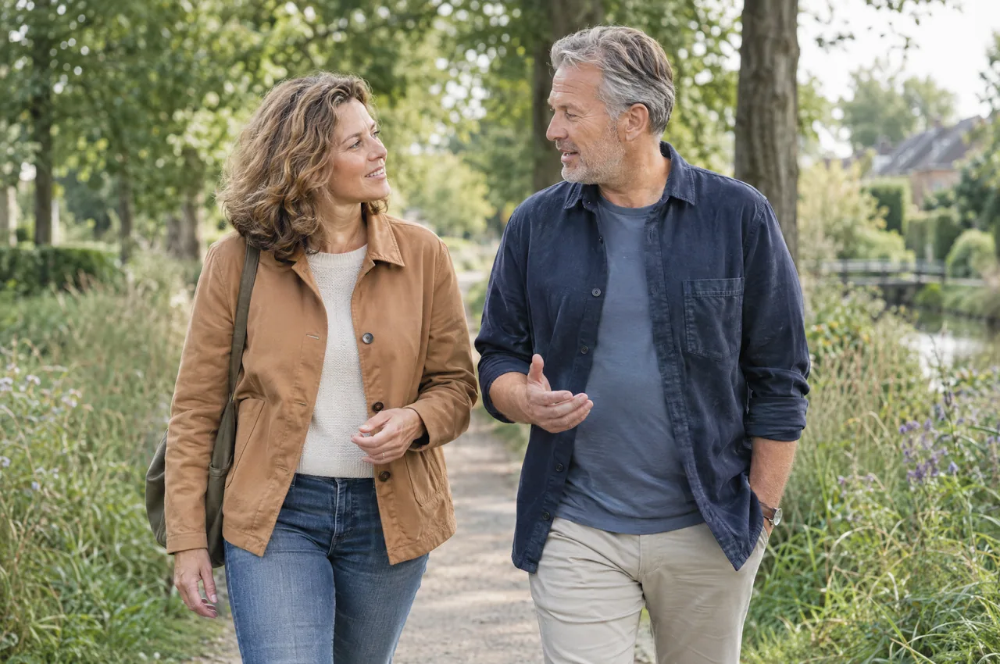

Ruimte voor jouw verhaal. Richting voor je volgende stap.
Veranderingen in werk of privé kunnen je uit balans brengen. Onze coaches luisteren, helpen je te ontdekken wat je nodig hebt en werken met je aan haalbare doelen. Persoonlijk, praktisch en afgestemd op jou.
Samen ontdekken wat bij je past
Samen aan de slag
Wat kun je van ons verwachten?
Coaching begint bij de persoon of het team en de vraag die er ligt. Met gesprekken, oefeningen en feedback ondersteunen we zelfreflectie, zelfvertrouwen en de ontwikkeling van vaardigheden. De begeleiding sluit aan op je leerbehoefte en de verandering waar je aan wilt werken.

Eén-op-één coaching
In persoonlijke sessies is er aandacht voor je professionele en persoonlijke situatie. Samen onderzoeken we wat je belemmert en waar je verder in wilt groeien. Oefeningen en praktische handvatten helpen om inzichten toe te passen in je dagelijks leven en werk.
Coaching bij burn-out
React2u biedt persoonlijke begeleiding bij vragen rond burn-out. Gesprekken en oefeningen richten zich onder meer op inzicht in je behoeften en het herkennen en bewaken van grenzen. We stemmen de begeleiding af op de situatie en betrekken waar nodig andere vakspecialisten.
Leven- en loopbaancoaching
Waar krijg je energie van, wat zijn je sterke kanten en wat past bij je? We helpen je interesses, talenten en drijfveren te verkennen. Zo ontstaat meer inzicht in mogelijke stappen in je werk en persoonlijke ontwikkeling.
De passende deskundigheid
React2u werkt met ervaren en gediplomeerde coaches. Als een vraag om aanvullende expertise vraagt, kunnen andere specialisten aansluiten, zoals een psycholoog, fysiotherapeut of bedrijfsarts. De begeleiding wordt afgestemd op wat iemand nodig heeft.
Helder voor iedereen
Weten waar je aan toe bent.
De rol van de werkgever
Signalen herkennen en inventariseren
De hulpvraag bespreekbaar maken
Ruimte bieden voor begeleiding
Samen aandacht houden voor het vervolg
De rol van React2u
Tot de kern van de coachingsvraag komen
De medewerker helpen zelf stappen te zetten
Zo nodig een specialist betrekken
Met de werkgever zorgen voor een passend vervolg
Elke situatie is anders
Wat speelt er bij jou?
Bespreek je vraag met ons. Samen kijken we welke begeleiding of dienstverlening past bij jouw organisatie en je medewerkers.